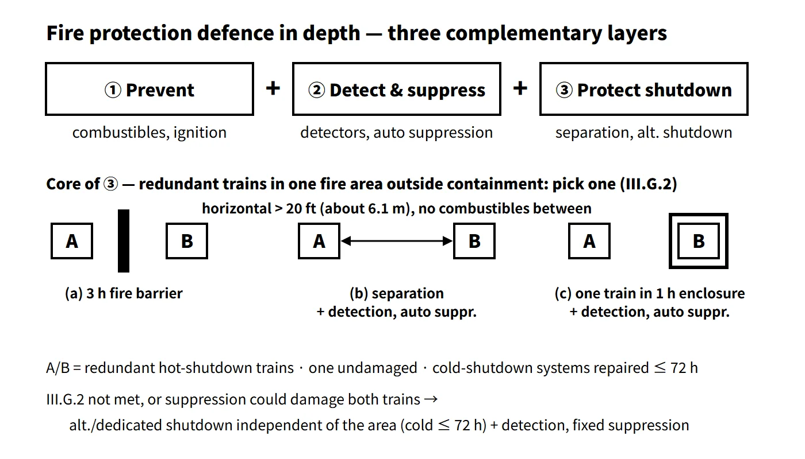

Accidents, Safety Analysis & Severe Accidents · C-SA-018
Fire Protection — Three Defence-in-Depth Objectives, Appendix R Separation Requirements and Safe Shutdown Capability
Prevent fires, detect and suppress them quickly, and keep one shutdown train free of damage even when a fire is not put out.
Fire protection at a nuclear power plant is the set of design and operating measures that prevent fires, detect and extinguish fires that do occur quickly, and keep the reactor in safe shutdown and minimize release of radioactive material even if a fire is not extinguished.
From the standpoint of nuclear safety regulation, the objectives are two: ensuring safe shutdown capability and minimizing release of radioactive material. Life safety and property protection are objectives of general fire-safety regulation, which also applies to the plant. For example, in the US, 10 CFR 50.48(c) did not endorse the life-safety and property (business-interruption) objectives of NFPA 805; it accepted only the reactor safety and radioactive release objectives as regulatory requirements.
Principle and mechanism
The three defence-in-depth objectives of fire protection
10 CFR 50 Appendix R, Section II.A, and RG 1.189 set the objectives of a fire protection program in three layers. If an earlier layer fails, the next one still protects safe shutdown.
| Objective | Content | Typical means |
|---|---|---|
| ① Prevention | Keep fires from starting | Non-combustible and heat-resistant materials, fire-retardant cables, control of combustibles and ignition sources, hot-work permits |
| ② Detection and suppression | Detect, control and extinguish fires that do occur, quickly | Fire detectors, automatic and manual suppression systems, fire brigade |
| ③ Protection of safe shutdown | Protect SSCs so that a fire not promptly extinguished does not prevent safe shutdown | Fire barriers and penetration seals, train separation, fire-rated enclosures, alternative shutdown |
![Three linked layers — prevent, detect and suppress, protect shutdown — above a cutaway of a cable spreading area with a train A cable tray and a train B cable tray divided by a 3-hour fire barrier, beside a table of the Appendix R III.G.2 separation methods: (a) 3-hour fire barrier; (b) horizontal separation of more than 20 ft (about 6.1 m) with no combustibles between, plus detectors and automatic suppression; (c) one train in a 1-hour rated enclosure plus detectors and automatic suppression; with III.G.3 alternative or dedicated shutdown when these cannot be met](../../assets/images/concepts/c-sa-018-fire-protection/fig1-fire-did-separation.webp)
Fire detection and suppression systems do not themselves perform reactor safe shutdown, so they are not required to have safety-system reliability. Instead, GDC 3 requires that they be designed so that their rupture or inadvertent operation does not impair safety functions. The last line of defence is placed not on active equipment but on passive means such as fire barriers and separation.
Separation of redundant trains — App. R III.G
Fire is a common cause that takes out every component sharing a space. The core requirement is therefore that "one train needed to achieve and maintain hot shutdown remains free of fire damage despite a fire in that fire area" (III.G.1). Systems needed for cold shutdown may be damaged but must be repairable within 72 hours. Where redundant trains (cables, equipment and associated non-safety circuits) are in the same fire area outside containment, they are separated by one of the following (III.G.2):
- a 3-hour rated fire barrier (structural steel supports with equivalent rating);
- horizontal separation of more than 20 ft (about 6.1 m), with no intervening combustibles or fire hazards, plus fire detectors and an automatic suppression system;
- enclosure of one train in a 1-hour rated fire barrier, plus fire detectors and an automatic suppression system.
Inside non-inerted containment, one of (a)–(c) is used, or one of: (d) separation of more than 20 ft with no intervening combustibles, (e) fire detectors and automatic suppression, or (f) a non-combustible radiant energy shield. Areas that cannot be protected by these methods, or where fire fighting or suppression systems could damage redundant trains together, need an alternative or dedicated shutdown capability independent of the cables and systems in that area (III.G.3). Its performance goals (III.L) are reactivity control, reactor coolant make-up, heat removal, process monitoring and support functions; a PWR must achieve and maintain hot standby and reach and hold cold shutdown within 72 hours (any repairs needed must also be completed within that time). Areas where safe shutdown equipment is operated, and their access routes, have battery-powered emergency lighting of at least 8 hours (III.J), and the RCPs have an oil collection system (III.O).
Multiple spurious operations (MSO)
When fire damages cable insulation, the result is not only open circuits: a hot short (voltage from another conductor) can open a valve or start a pump. If a single fire causes several such spurious actuations at once (multiple spurious operations), flow can be diverted or coolant lost. The US brought MSO into safe shutdown analysis through NEI 00-01 and RG 1.189 Rev.2 (2009) — the fire safe shutdown analysis therefore includes circuit analysis covering multiple spurious operations.
Deterministic versus performance-based — NFPA 805
Plants licensed to operate before 1 January 1979 are subject to Appendix R (III.G, J and O unconditionally); later plants demonstrate an equivalent level through licence conditions and RG 1.189. In 2004, 50.48(c) accepted NFPA 805 (2001 edition) as an alternative. Risk and performance are evaluated with fire PSA (NUREG/CR-6850) and fire modelling, but the transition must be approved as a licence amendment, and the licensee must show that safety goals are met and safety margins and defence in depth are maintained. A PWR feed-and-bleed path on its own is not accepted. According to NRC material from 2013, about 48 units remained in the transition process.
![Reactor-state path on a logarithmic time axis from 0.1 to 72 hours after a fire: reactor trip from power operation, hot standby held with one undamaged train, an illustrative dashed cooldown to cold shutdown before the 72-hour line, and battery emergency lighting of at least 8 hours; beside it a card with the fire PSA concept equation CDF fire equals the sum over scenarios of ignition frequency times severity factor times non-suppression probability times conditional core damage probability, and NFPA 805 notes](../../assets/images/concepts/c-sa-018-fire-protection/fig2-shutdown-timeline-fpsa.webp)
What it means in a plant
The Browns Ferry fire (22 March 1975)
Workers checking air leaks through a penetration in the Unit 1 cable spreading room with a candle ignited the sealing material and the cables; the fire was put out about 7 hours later. More than 1,600 cables were damaged, 628 of them important to safety (NRC). All of Unit 1's emergency core cooling systems were lost, but the operators kept the core cooled with other equipment and manual actions, and there was no core damage and no release of radioactive material. The lesson — that when redundant trains' cables are concentrated in one area, a single fire defeats redundancy — led to BTP APCSB 9.5-1 (1976) and Appendix R (published 1980).
Main control room fire and alternative shutdown
If a fire makes the main control room uninhabitable, shutdown is maintained from the remote shutdown room (RSR in the APR1400 design; remote shutdown panel RSP in the OPR1000 design). Other situations that threaten habitability include ingress of toxic gas and ingress of radioactive material during an accident. Before evacuating, operators manually trip the reactor and confirm shutdown, trip the turbine and take the procedures with them; in the remote shutdown room they use the control transfer switches to isolate the main control room circuits electrically and then maintain hot standby.
Fire hazard analysis and safe shutdown analysis
A fire hazard analysis (FHA) is performed during design and construction, and a fire protection plan is established and implemented during operation. The FHA reviews postulated fires fire area by fire area, while the fire safe shutdown analysis confirms the damage-limit requirements at the system and circuit level.
Regulatory and design criteria
For example, the US NRC framework and IAEA standards:
| Basis | Key point |
|---|---|
| 10 CFR 50 App. A, GDC 3 | Arrangement minimizing the effects of fire and explosion; non-combustible and heat-resistant materials; detection and suppression systems; inadvertent operation of suppression must not impair safety functions |
| 10 CFR 50.48 | (a) fire protection plan (b) App. R for pre-1979 plants (c) NFPA 805 alternative (f) decommissioning |
| 10 CFR 50 App. R | II.A three objectives, III.G separation and alternative shutdown, III.J emergency lighting, III.L performance goals, III.O oil collection |
| RG 1.189 Rev.5 (November 2023) | Three objectives, design and operating guidance (editorial revision of Rev.4) |
| IAEA SSR-2/1 Rev.1 Requirement 17, SSG-64 (2021) | Design protection against internal hazards (fire) |
RG 1.189 has been updated to Rev.4 (2021) and Rev.5 (2023); MSO analysis was written into RG 1.189 Rev.2 (2009).
Easily confused pairs
| Fire hazard analysis (FHA) | Fire safe shutdown analysis (SSA) | Fire PSA | |
|---|---|---|---|
| Question | Are fire hazards and protection measures in each fire area adequate? | Do the safe shutdown trains meet the damage-limit requirements in a fire? | What are the fire-induced CDF and LERF? |
| Method | Review of combustibles, design basis fire and protection features | Function → system → circuit → fire-area analysis (including MSO) | Ignition frequency × severity × non-suppression probability × conditional core damage probability |
| Nature | Deterministic | Deterministic | Probabilistic (used for NFPA 805 performance-based approach) |
Key points at a glance
- Objectives: ensure reactor safe shutdown capability in a fire + minimize release of radioactive material (life and property belong to general fire-safety regulation).
- Three defence-in-depth objectives (App. R II.A, RG 1.189): ① prevent fires ② detect, control and extinguish quickly ③ protect safe shutdown SSCs even from a fire that is not extinguished.
- Fire-prevention design measures: non-combustible finishes (fire-retardant materials if unavoidable) / ignition sources isolated or shielded from combustibles / storage and distribution of flammable liquids and gases must not adversely affect safety SSCs / limit explosive-gas concentration and oxygen / isolate and protect against arc damage from high-voltage equipment / lightning protection.
- Separation (III.G.2): 3 h fire barrier / more than 20 ft (about 6.1 m) + no combustibles + detection and automatic suppression / 1 h enclosure + detection and automatic suppression.
- Confirming safe shutdown and decay-heat removal capability in a fire: effect of the design basis fire on the fire area and adjacent areas / smoke, hot gases and suppressants do not affect other fire areas / at least one of the redundant trains remains undamaged / where it does not, an independent alternative or dedicated shutdown capability. Damage limits: one hot-shutdown train undamaged, cold shutdown restored within 72 h; circuit analysis including MSO.
- Alternative shutdown (III.G.3, III.L): remote shutdown room; reactivity control, coolant make-up, heat removal, process monitoring; cold shutdown within 72 h.
- Performance-based: NFPA 805 (2001) accepted by 50.48(c), demonstrated with fire PSA, defence in depth and safety margin maintained.
- Trigger: Browns Ferry 1975 cable fire → Appendix R.
